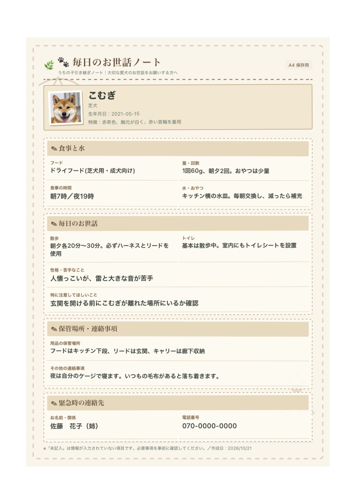

🐾 A4書類・保存テスト v2
今回は大容量データをHTMLに埋め込まず、画像とPDFを別ファイルとして開きます。GitHubにHTML・PNG・PDFの3ファイルを同じ場所へアップロードしてください。
PNG画像を開くA4 PDFを開く画像：開いた画像を長押しして「写真に保存」等を選択。PDF：開いたPDFの共有メニューから「ファイルに保存」を選択。ブラウザによって表示が異なります。サンプル画像

これは保存方法のみの確認用で、入力データとの連動はありません。
これは保存方法のみの確認用で、入力データとの連動はありません。